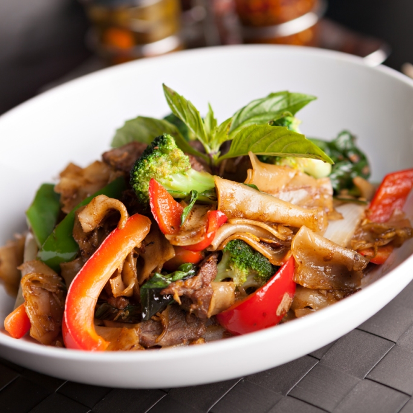

"Drunken Noodle" aka Pad Kee Mao

Description
Drunken noodle or drunkard noodles is a Thai stir-fried noodle dish very similar to phat si-io, albeit spicier. In Thai, pad means 'to stir-fry' and khi mao means 'drunkard'.
Ingredients
- 2 tbsp. water
- 12 oz. sliced chicken thighs or breasts
- 8 oz. wide dried rice noodles
- 1 1/2 tsp. brown sugar
- 2 tsp. soy sauce
- 1 tsp. dark soy sauce
- 2 tsp. oyster sauce
- Pinch ground white pepper
- 3 tbsp. vegetable or canola oil
- 3 cloves garlic
- 1/4 tsp. fresh grated ginger
- 2 shallots (sliced)
- 1 scallion
- 4 Thai red chili peppers
- 1 cup holy basil or Thai basil
- 5 to 6 pieces baby corn
- 2 tsp. Shaoxing wine
Steps
- Work the 2 tablespoons of water into the sliced chicken with your hands until the chicken absorbs the liquid. Add 1 teaspoon soy sauce, 1 teaspoon oil, and 2 teaspoons cornstarch, and mix until the chicken is evenly coated. Set aside for 20 minutes.
- Follow the directions on the rice noodle package to prepare your noodles. What we usually do is prepare a stainless steel bowl with hot tap water to soak the noodles for about 15 minutes. Then we just drain them and set aside for cooking.
- Stir together the dissolved brown sugar mixture, soy sauces, fish sauce, oyster sauce, and white pepper in a small bowl and set aside.
- Heat your wok until it is close to smoking, and spread 2 tablespoons of oil around the perimeter of the wok. Add the chicken and let it sear for 1 minute on each side until it is about 90% cooked. Remove from the wok and set aside. If the heat was high enough and you seared the meat correctly, your wok should be still clean with nothing sticking to it. If not, you can wash the wok to prevent the rice noodles from sticking.
- Continue with the wok on high heat and add 1 tablespoon of oil, along with the garlic and grated ginger.
- After a few seconds, add the shallots. Stir fry for 20 seconds and add the scallions, chili peppers, basil, baby corn and shaoxing wine. Stir-fry for another 20 seconds and add in the rice noodles. Use a scooping motion to mix everything for another minute until the noodles warm up.
- Next, add the prepared sauce mixture and stir-fry at the highest heat for about 1 minute until the noodles are uniform in color. Take care to use your metal spatula to scrape the bottom of the wok to prevent sticking.
- Add the seared chicken and stir-fry for another 1 to 2 minutes.